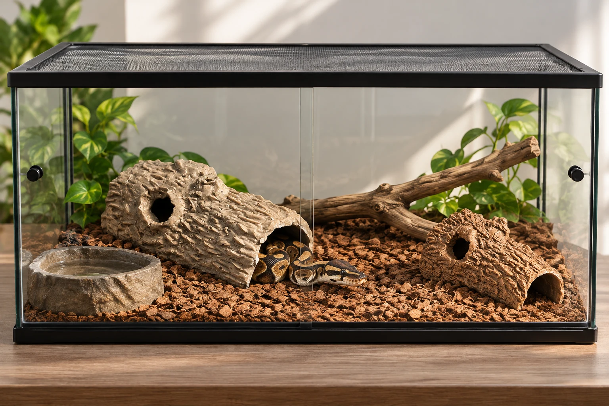
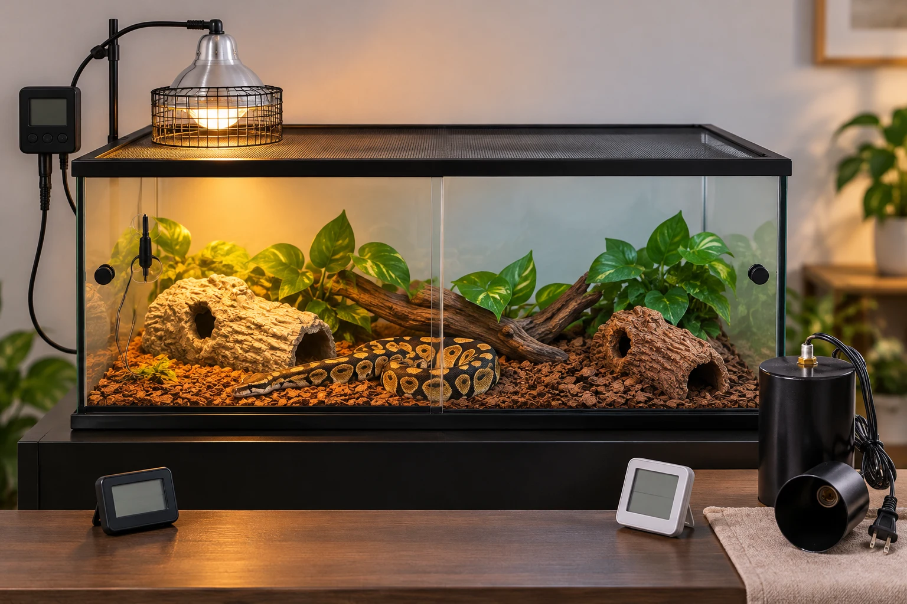
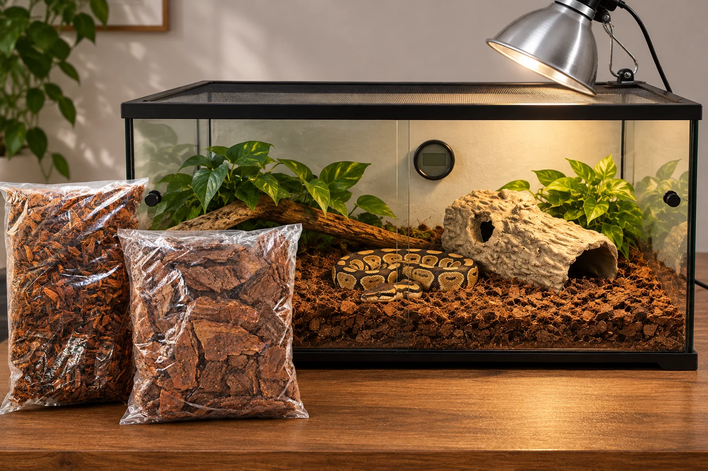
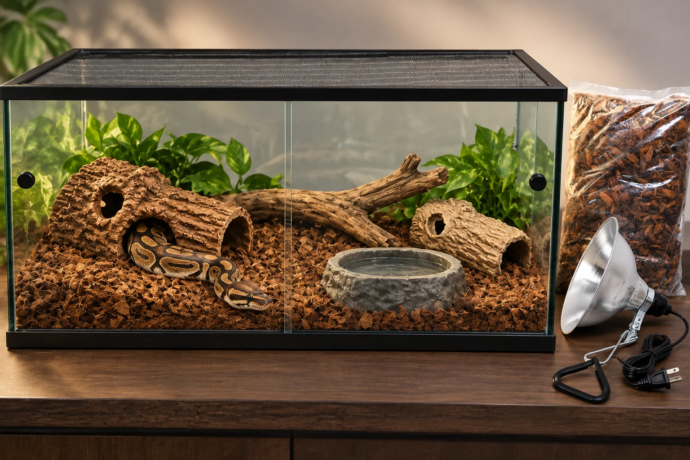

Terrario, temperatura, humedad y accesorios: conoce lo esencial para preparar el hábitat de tu pitón bola y elegir según su tamaño.
Imágenes recibidas como aprobadas. Faltan autorización de subida y guardado. Los cinco productos aparecen agotados al consultar; los pines son una propuesta revisable. Las cuevas y accesorios genéricos no tienen pines.
La pitón bola (Python regius) es principalmente terrestre, aunque aprovecha ramas bajas y firmes. Para elegir sus accesorios, empieza por su longitud y las condiciones de tu casa. Fuente veterinaria.
Antes de adquirirla
Prepara su alojamiento y comprueba que funciona durante una semana. Planifica limpieza y atención veterinaria. Guía de cuidados.
Terrario según su crecimiento
Necesita estirarse por completo, moverse y elegir entre zonas protegidas. Mide la serpiente: el largo del recinto no debe quedarse corto. La altura no sustituye el espacio de suelo. Elige pensando en su crecimiento, con cierre seguro y ventilación. Criterio de tamaño.

Las proporciones son ilustrativas. La elección depende de la longitud del ejemplar y del espacio útil. Las cuevas mostradas requieren validar medidas; no se ofrecen como refugios para adultos.
Temperatura y calefacción segura
Busca una zona de asoleo de 30–32 °C y un extremo fresco de 24–26 °C. Referencia de temperaturas.
Foco o placa requieren un termostato compatible, protección contra contacto y medición independiente. La potencia depende del montaje. Para calor nocturno, utiliza una fuente sin luz si resulta necesaria; evita piedras calefactoras. Seguridad térmica.

Campanas como alternativas sujetas a validación técnica. El foco, la protección, el soporte, el controlador y los medidores ilustrados no se consideran incluidos ni productos identificados por esta imagen.
Humedad, ventilación y medición
La referencia RSPCA indica 50–60% habitual y aumentos controlados cercanos al 80%; MSD recoge 50–80%. Son orientaciones, no una cifra universal. Mide con higrómetro y revisa la muda; mantén ventilación y evita sustrato empapado. RSPCA y MSD.
Sustrato y refugios
Compara coco y corteza formulados para reptiles: confirma composición y limpieza. Evita pino y cedro. Coloca un refugio ajustado al cuerpo en cada extremo para que pueda ocultarse sin perder acceso al gradiente. Sustratos y refugios.

Coco y corteza se muestran para comparar opciones. Su uso requiere confirmar composición y compatibilidad; la imagen no indica que deban mezclarse ni una proporción de uso.
Agua y decoración
Ofrece agua potable siempre, en recipiente estable y suficientemente amplio. Añade cobertura y ramas sujetas, sin bordes cortantes. Retira residuos y cambia el agua cuando se ensucie. Agua y enriquecimiento.

El recipiente es ilustrativo y no tiene producto vinculado. Las cuevas chica y mediana quedan sin pin; evaluar su tamaño para ejemplares pequeños o usos temporales.
Cuándo consultar al veterinario
Respiración ruidosa o trabajosa, pérdida de peso o muda retenida sobre los ojos requieren valoración de un veterinario de reptiles. Señales de salud.
¿Qué necesita tu pitón? Cuéntanos cuánto mide y cómo será su alojamiento. En Artiani te ayudamos a comparar terrarios y accesorios según tu caso y disponibilidad, con alternativas que puedes elegir por separado.
Explora opciones por categoría
Elige cada elemento por separado según tu ejemplar y confirma disponibilidad antes de comprar.
SEO
Hábitat para pitón bola: terrario y accesorios | Artiani
Conoce cómo elegir terrario, sustrato, calefacción y accesorios para tu pitón bola. Compara opciones según su tamaño y consulta disponibilidad en Artiani.
Slug: piton-bola-preparar-habitat
Antes de registrar
- Cinco WebP existentes, 1536 x 1024, MIME y peso comprobados: verificado
- Revisión visual de escenas y referencias de cinco productos: realizada
- Cinco publicaciones públicas y URLs actuales: revalidado_por_GET
- Disponibilidad de cinco candidatos: todos_agotados_2026_11_01
- Aprobación editorial del artículo y propuesta de relaciones/pines: pendiente_aprobacion_humana
- Subida a Media CMS y obtención de URLs canónicas: pendiente_autorizacion
- Sustituir cinco tokens Media en portada, HTML, SEO y relaciones: pendiente_urls_reales
- Verificar imágenes públicas sin sesión y persistencia del esquema Blog: pendiente_antes_guardado
- Autorizar guardado como borrador: pendiente
- Publicación visible: requiere_autorizacion_posterior_separada
El payload usa tokens Media explícitos: sustituirlos solo por URLs reales devueltas tras la subida autorizada.